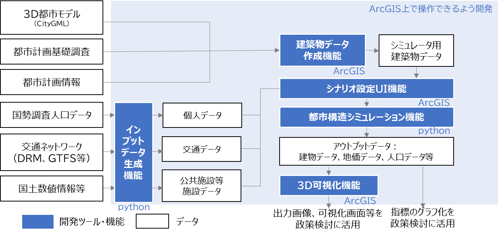
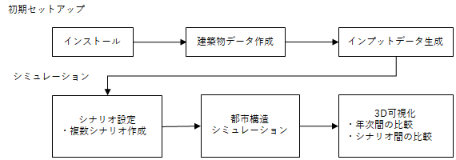

3. 本システムの概要
3.1. 都市構造シミュレーションの概要
人々の活動がますます多様化する昨今、人々のウェルビーイング向上と持続可能な都市経営を実現するため、市民をはじめとする多様なステークホルダーがまちづくりの将来ビジョンを共有し、共感を得ながらビジョンを実現していくプランニングプロセスの必要性が高まっている。
都市構造シミュレーションは、3D都市モデルを活用し、立地適正化計画等のまちづくり施策が都市構造に与える影響をわかりやすく可視化するシミュレータである。また、ビジョンを広く共有するためのツールとして地方公共団体やコンサルタント等が活用しやすいよう、データ整備からシナリオ設定、シミュレーション、可視化までを簡便に実施することができるユーザーインターフェースを実装している。
本システムは、ArcGISのツールボックスであり、OSSとして開発をしているため、ファイルをPLATEAUホームページよりダウンロードすることで、ArcGIS Proを利用可能なPCであれば無料で利用することが可能である。

都市構造シミュレーションシステムの概要
3.2. システムの利用フロー
ユーザーは初めにソフトウェアのインストールを行い、各機能を利用可能な状態にする。ソフトウェアをインストールした後に、建築物データ作成機能及びインプットデータ生成機能を実行し、初期データのセットアップを行う。初期セットアップ完了後、シミュレーションのためのシナリオ設定を行う。シナリオ設定は初期セットアップ時に設定したゾーンごとに行う。
シナリオ設定後、作成したシナリオデータを都市構造シミュレーションに渡し、実行する。都市構造シミュレーションは作成したシナリオごとに実行する。
3D可視化機能によりシミュレーション結果を3D地図上に可視化する。同一シナリオの年次ごとの比較やシナリオ間の比較を行い、適切な施策の検討に用いる。

システムの利用フロー
3.3. 各システムの機能概要
実証システムの機能概要は以下のとおりである。
| 分類 | 機能名 | 機能説明 |
|---|---|---|
| 建築物データ作成機能 | FootPrint作成 |
|
| 欠損値補完 |
|
|
| ゾーンコード等付与 |
|
|
| インプットデータ作成機能 | 呼出し |
|
| ゾーンデータ作成機能 |
|
|
| 交通データ作成機能 |
|
|
| 個人データ生成 |
|
|
| シナリオ設定UI機能 | ゾーン情報設定 |
|
| 当該ゾーン間所要時間設定 |
|
|
| 都市構造シミュレーション機能 | 都市構造シミュレーション機能 |
|
| 3D可視化機能 | 可視化 |
|
3.4. 必要な入力データの種類
シミュレーションを実施するために準備する必要があるデータは以下のとおりである。
（具体的な整備方法は、データの準備を参照）
3.4.1. 建築物データ作成機能
- 建築物データ [GeoDataBase形式]
- 土地利用現況データ[GeoDataBase形式]
- 都市計画決定情報データ[GeoDataBase形式]
- ゾーンポリゴンデータ[shp形式]
- 道路NWデータ[shp形式]
- 鉄道駅位置データ[csv形式]
3.4.2. インプットデータ生成機能
- ゾーンポリゴンデータ[shp形式]
- 施設ポイントデータ[csv形式]
- 道路NWデータ[shp形式]
- 鉄道駅位置データ[csv形式]
- 鉄道ＮＷデータ[shp形式]
- バス停位置データ[csv形式]
- バスＮＷデータ[csv形式]
- 国勢調査メッシュ別人口データ[txt形式]
- 250mメッシュポリゴンデータ[shp形式]
- 国勢調査世帯別人口データ[csv形式]
3.4.3. 都市構造シミュレーション機能
- 地価データ[shp形式]